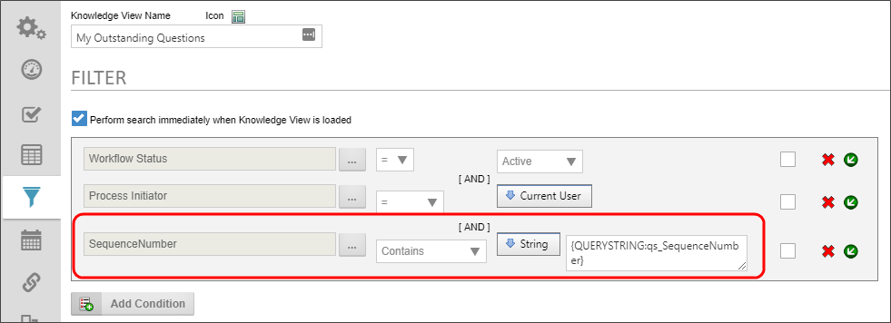
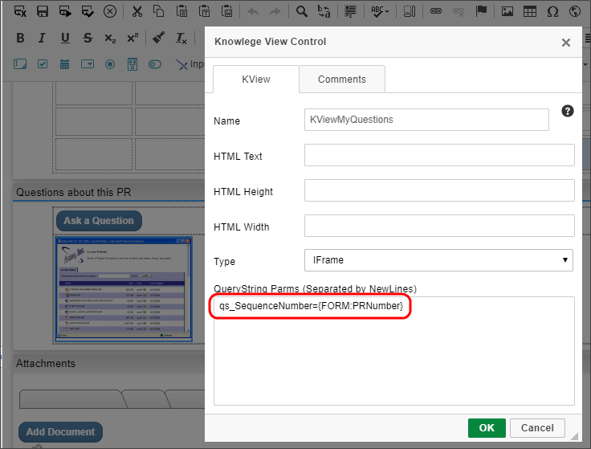
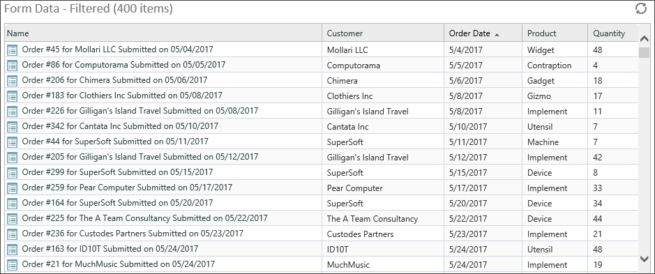
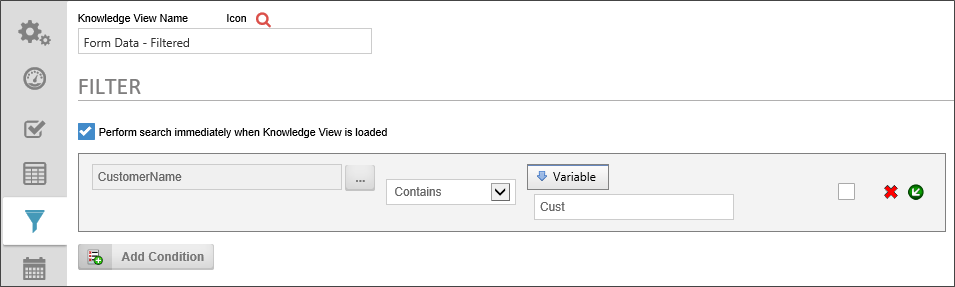
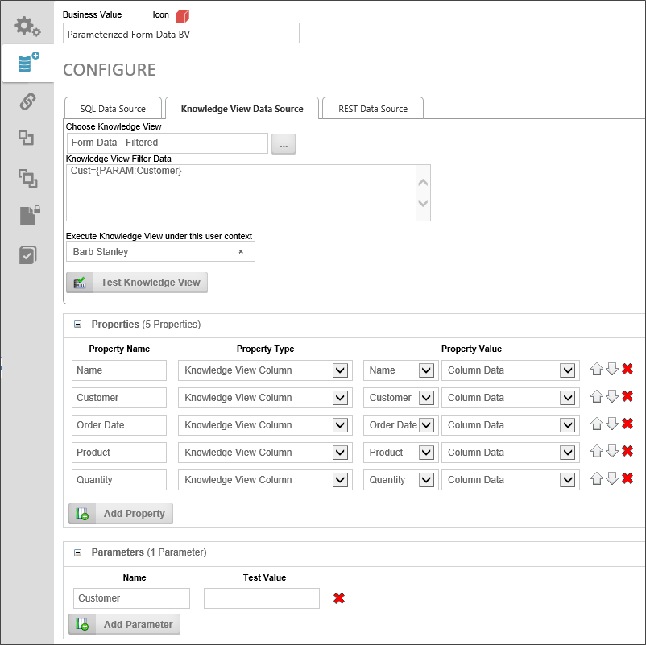
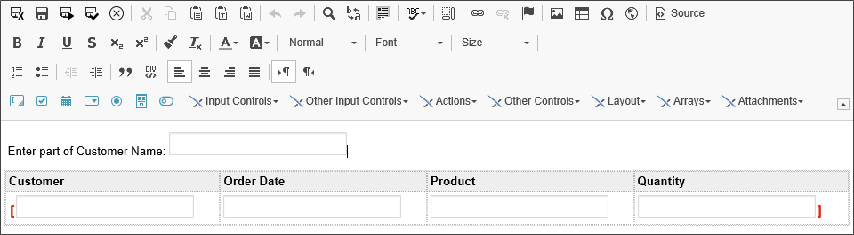
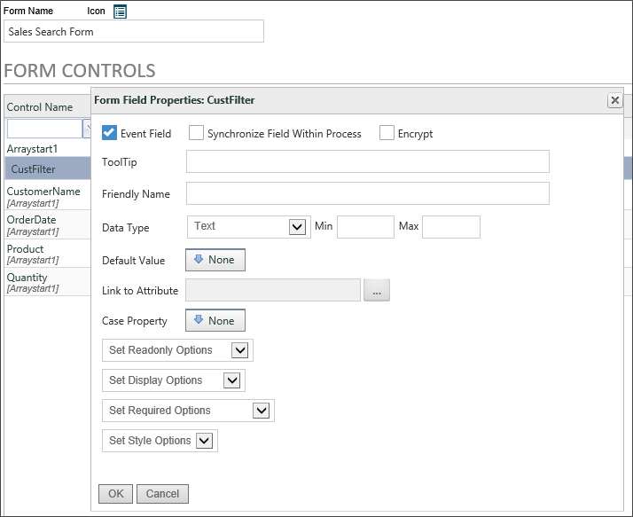
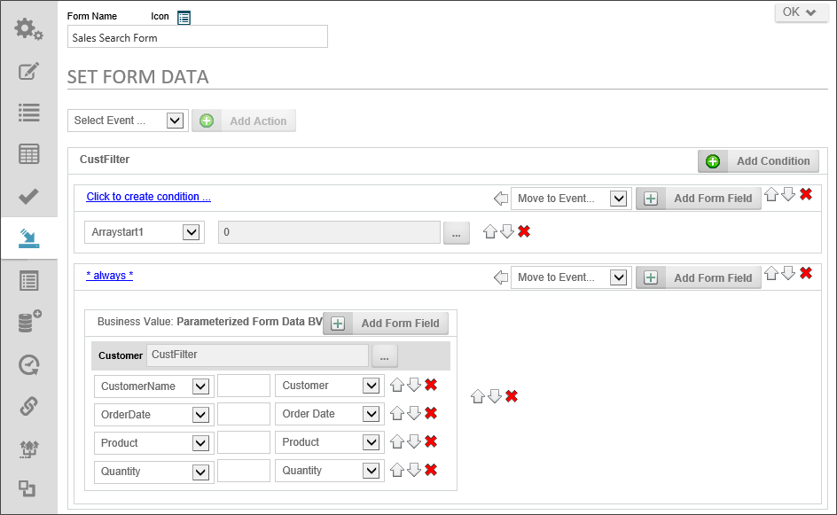
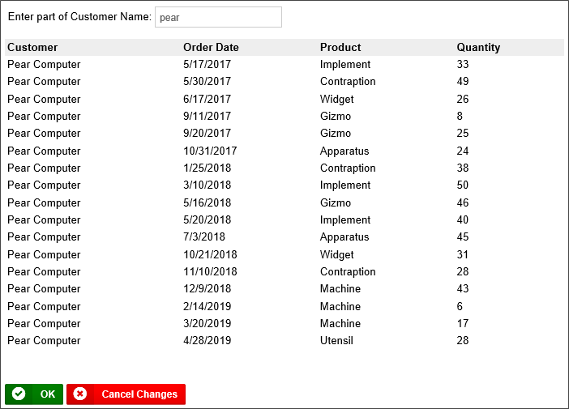

Knowledge Views can be parametrized; which means configured to return only data that matches a filter value that is passed to the Knowledge View from an external object, like a form or from a URL Parameter. Indeed, we saw an example of the latter in the Knowledge View Exporting and Reporting topic, in the section titled "Passing Filter Values in a URL". In this topic, we will describe the required components for parametrizing a Knowledge View, and how to use a Business Value to call a parametrized Knowledge View, and only return the information that matches the filter we'd like to specify.
The most common use case for implementing Knowledge View parameters via a Form is through the use of the Knowledge View control. To implement this use case, your Knowledge View must have a parameter filter. For example, we might need to pass a unique number to the Knowledge View to return items that match a specific form or request number. So, we need to pass that unique number through a query string variable. To do so, we'll configure the query string variable in the filter tab of the Knowledge view, to create a query string named "qs_SequenceNumber".

In the form, once we place the Knowledge View Control on the form, we have to configure the query string in the Knowledge View control's Properties dialog box.
In the form, there is a form field called PRNumber that stores a unique request number. We will pass this value to the Knowledge View through the "qs_SequenceNumber" query string by assigning the value of PRNumber form field, using a form field system variable.

When the form runs, the Knowledge View Control will display only records that are related to the specific request that was created by that form instance.
For the purposes of this discussion, we have a simple Knowledge View that returns Form Instances containing some sales data.

We want to build a search that uses this knowledge view to return only records for specified customers, so, we need to parametrize the Knowledge View to accept the customer name from an external source, like a form.
The first step to parametrizing a Knowledge View is to create the filter parameter you'd like to apply. In the Filter tab of the Knowledge View definition, you need to create a filter that uses a variable to filter the data.

One of the Form Fields in the set of Form Instances we are querying is called CustomerName, and this is the form field upon which we wish to filter.
On the left side of the filter condition, add the CustomerName form field, then set the Operator to "Contains". In cases like this, it's a good practice to use the "Contains" operator so users can a) perform a search using just a part of the customer name, without having to worry about matching the whole name exactly, and b) to return ALL of the records in the Knowledge View if the filter value is blank.
On the right side of the condition, set the value to a "Variable". When you do so, a text box will appear that will enable you to enter the variable name you want to create. This name is an arbitrary value, so we are going to name the variable, "Cust". Now that we've set up the variable parameter, we can save and close the Knowledge View.
With a Knowledge View that will accept a parameter, we can access filtered data by passing a value to the Knowledge View from another object, using a Query String. A Query String is a simple text phrase that passes the parameter value to the Knowledge View, and it's written with a specific syntax:
VariableName=Value
In the case of our example above, we might have a customer named "Pear Computer". If we wanted to return only sales orders from Pear Computer, therefore, our query string might be:
Cust=Pear Computer
Of course, in most cases, we won't be able--or want--to hard-code a customer name. Instead, we'll need to pass the customer name via some sort of system variable, based on the value of, say, a form field. So, to do that, let's continue with this sample Knowledge View, and build a more complicated implementation based on it.
Let's say that we'd like to create a search form that enables us to enter the customer's name—or, since we're using the Contains operator, the relevant part of a customer's name—and return all the orders from that customer. To build that form, we'll need an input box to serve as the search box into users will enter the name, and an array that contains the rows and fields that the Knowledge View return. Of course, to populate that Array, we'll also need a Business Value that we can bind to the Array to fill out the data.
First, let's build the Business Value. We need to create a Business Value that uses our Knowledge View as a data source.

Notice two things about this sample Business Value. First, in the Parameters section of the Business Value, There is a Parameter named "Customer". This is the parameter we will use to pass the customer name to the Knowledge view. Second, in the Knowledge View Data Source tab, we have specified the Query String to use in the Knowledge View Filter Data property as:
Cust={PARAM:Customer}
This Query String will apply the value of the Customer parameter of the Business Value to the Cust variable we created in the Knowledge View.
Finally, of course, we need to create the Business Value Properties that will store the Knowledge View Columns. Once we've done that, our Business Value is complete, so we can save and close it, and create our form, which is pretty simple.

At the top of our form, we have a text box named CustFilter, where we will enter the customer name. Below that, we have the array that will display the rows and fields that will be returned by our Business Value.
In the Form Controls Tab of the Form definition, we will make the CustFilter field an Event field, so that the Business Value gets called and changes the data in the Array each time we change the value of the CustFilter field.

As an aside, all of the array's Input controls are disabled from the Form Controls tab as well. Also, the form is set to Show Disabled Fields as Text since we don't want to do any data entry on this form, so we don't need to show the actual Input controls inside the array, just the data they will contain.
To bind the array to our Business Value, so that it displays the data we want to see, we need to go to the Set Form Data Tab of the Form definition, and do two things, using the CustFilter event field.

First, every time the CustFilter event fires, we want to empty the array. Otherwise, Process Director will keep appending rows to the array every time we change the CustFilter field. So, the first action that takes place when the CustFilter event fires is to set the value of the Array to a Number, and enter "0" as the number. The value of an array is the number of rows in the array, e.g., an array with a value of "2" will display two rows. By setting the value to 0, we are removing all of the rows in the array, so that the empty array can be refilled with fresh data.
The second thing we need to do is to set the values of the array fields to the properties contained in the Business Value. When we do so, the configuration screen will prompt us for the value we want to use as the Customer parameter. In this case, we want to use the CustFilter field to supply the parameter.
So, let's take a step back and look at the parametrized architecture we've created.
Assuming that we've configured all of this correctly, we now have a working search form that uses a Business Value and parametrized Knowledge View to display our search data.
